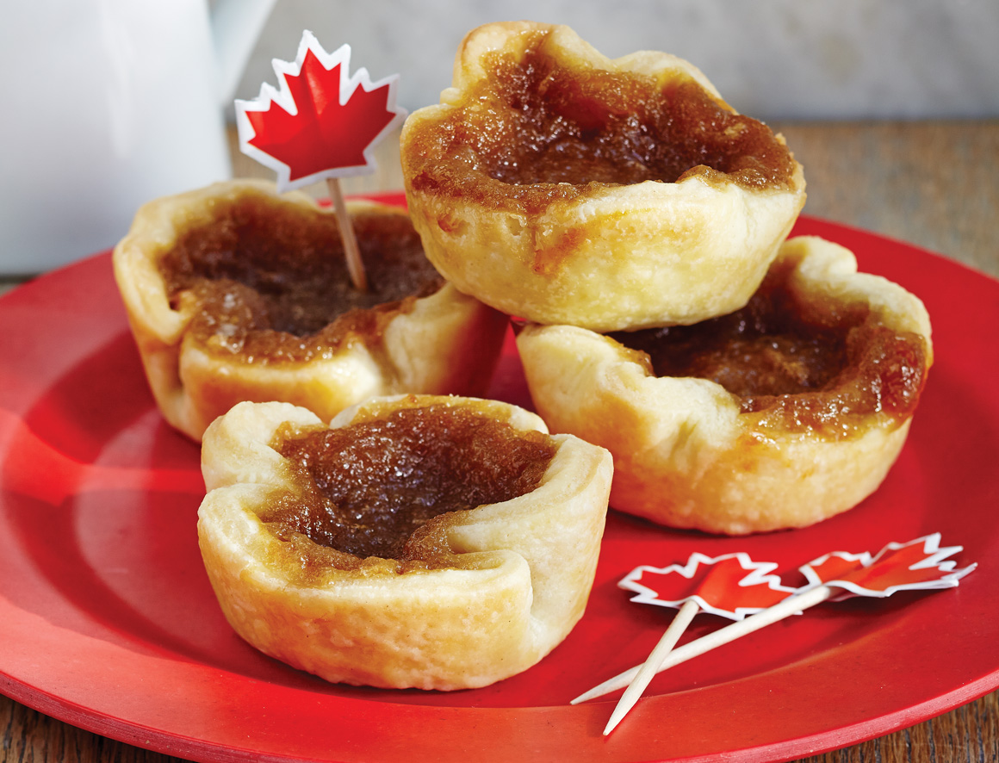

BUTTER TARTS
Western Dish (Canada)

Takes 1 hour
Makes 16 servings
MAIN DISH
Ingredients
- pie pastry
- 1⁄2 cup raisins
- 1⁄4 cup soft butter
- 1⁄4 cup packed brown sugar
- 1 pinch salt
- 1⁄2 cup corn syrup
- 1 egg, lightly beaten
- 1⁄2 teaspoon vanilla
Instruction
- 1. Prepare muffin pans by rolling out pie dough and cutting 4-inch (approx) circles; fit dough circles into muffin cups; set aside in fridge until ready to fill.
- 2. In a small bowl, place raisins and cover with hot tap water; let stand on the counter for 30 minutes.
- 3. In a large bowl, using a wooden spoon, mix together the soft butter, brown sugar, salt and corn syrup; stir well until sugar is dissolved and butter is creamed.
- 4. Add egg and vanilla and mix well.
- 5. Drain raisins.
- 6. Retrieve tart shells and divide raisins equally into all shells; then divide butter mixture into all tarts.
- 7. Bake at 400F for 15-20 minutes; filling will be lightly browned but still bubbling.
- 8. Canadians fall into two camps about butter tarts and are quite loyal to their favourite type: runny or firm.
- 9. If you like firm, bake them for the full 20 minutes, even adding another minute or two if you wish.
- 10. Let cooked butter tarts cool in pans for 10 minutes after removing from oven; then remove and place on racks until completely cool.
SOURCE : www.geniuskitchen.com
Add to Cart
want to try this recipe? order ingredients now!